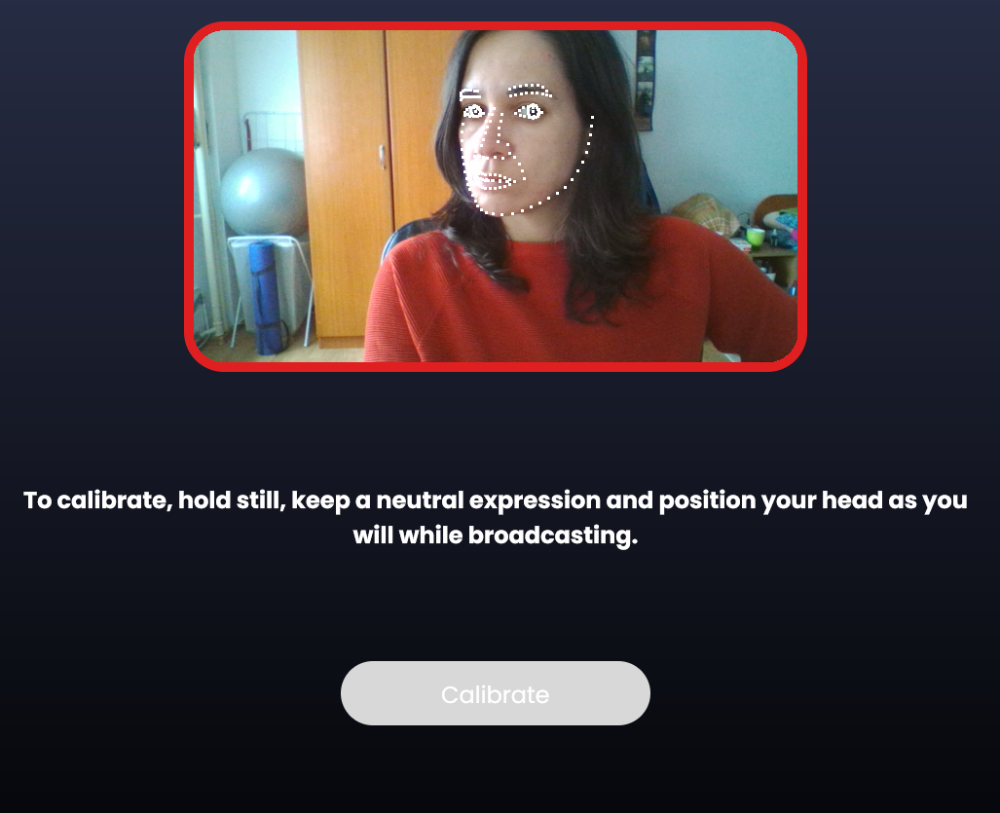
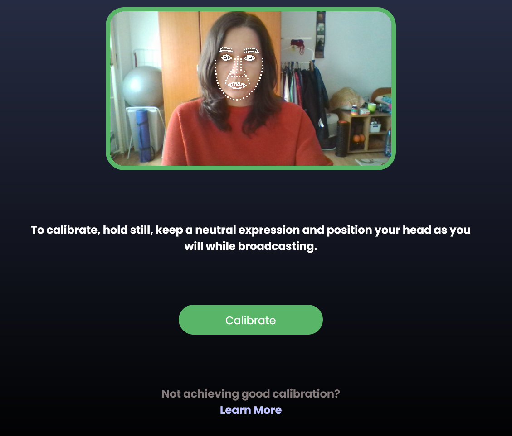
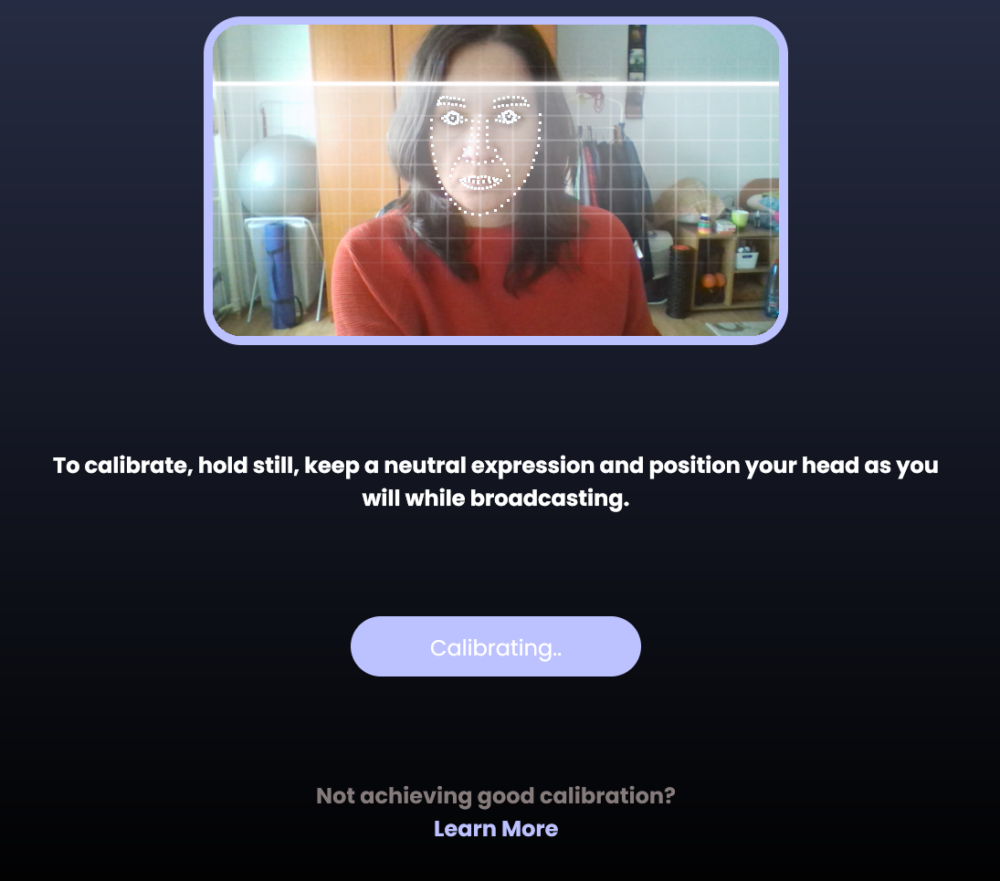

Animazeをキャリブレーションするにはどうすればよいですか？
Animazeアプリのキャリブレーション方法について説明します。
キャリブレーションが必要な場合、Animazeアプリのフェイスフィードの下にある「キャリブレーション」ボタンが点滅します。
次の手順でキャリブレーションを行います:
1.Animazeアプリを開きます
2.カメラフィードの下の「キャリブレーション」ボタンをクリックします。画面上にカメラフィードが無い場合、キーボードショートカット(CTRL +C)を使ってキャリブレーション画面を開くこともできます。
3.キャリブレーション画面が開いたら、無表情で顔をまっすぐカメラに向けます。
カメラに対して顔が正面になっていない場合、キャリブレーションは実行されません。自分の顔のポジションが正しくない場合、キャリブレーション画面の枠線が以下の画像のように赤色で表示され、「キャリブレーション」ボタンがクリックできません:

顔のポジションが正しい場合、キャリブレーション画面の枠線が緑色になり、「キャリブレーション」ボタンをクリックできるようになります

4.キャリブレーションの実行中は顔を動かさないでください

キャリブレーションが終了すると、アプリのメイン画面に戻ります。
プロのヒント：顔に十分な光が当たるようにしてください。ただし均一にライトが当たるようにし、顔面に強い陰が出たり、左右差が出たりしないように調整してください。キャリブレーション実行中は、無表情で、顔を動かさないようにしてください。